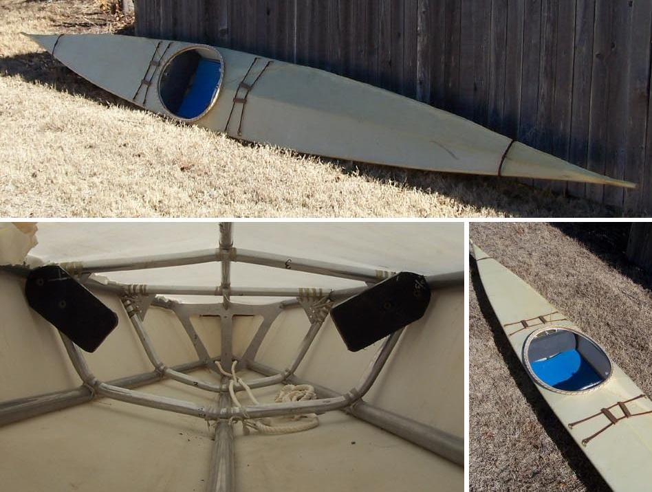

| (New) Sea Raider by John Forney (US) | Menu Previous Page Next Page |
|
 John Forney from Ft. Worth, Texas has completed a non-folding Sea Raider. John used lashed aluminum cross sections and a sewn nylon skin coated with Urethane. The Sea Raider weighs 23 lbs. The deck rigging is traditional. |
|